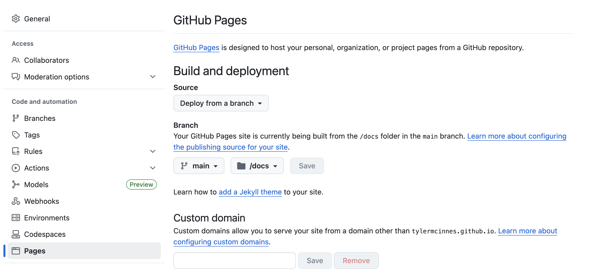

Challenge
First, a challenge: What’s special about this page title? Specifically, what do I need to do when creating this .qmd file to make sure this renders?
This page title contains a colon. Since colons are used to separate the key-value pair in the page YAML header, I need to make sure that the title is wrapped in quotation marks.
Aims
- Recognise sensible directory structure and appreciate how consistent structure aids reproducibility and collaboration.
- Understand what a Quarto project is and when to use one.
- Create and configure a basic Quarto project with
_quarto.yml.
- Learn how
_quarto.ymlcontrols project-wide behavior (rendering, format, options).
Project Directory Structure
Project structure and management are an important aspect of reproducible research. We want to build habits that support:
Transparency: Other people (and of course - future you) must be able to understand your workflow.
Reproducibility: Define and clearly show what the expected inputs and outputs are.
Collaboration: Having a consistent structure makes it easier for collaborators and teams to work together.
Modularity: Each component of a workflow should be something that can be isolated, tested, and reused in new contexts.
Key practices for project layout
Some key practices to keep in mind include:
Separate directories for Raw and Processed Data.
- Raw and Processed Data will probably be included in your
.gitignorefile so that it is not uploaded to github.
- Raw and Processed Data will probably be included in your
Scripts directories could be split by work stage (e.g., preprocessing/analysis/visualisation) or by type (e.g., R/Bash).
Output directories should contain subdirectories for each type of output (figures/tables).
Configuration files (
_quarto.yml,styles.css,README) should sit in the main project directory.Global naming convention across projects.
An example directory structure
my-genomics-project/
├── _quarto.yml
├── index.qmd # Project overview or README
├── about.qmd # Team/project info
├── data/
├── raw/
└── processed/├── scripts/
├── qc/
├── analysis/
└── visualizations/├── results/
├── figures/
└── tables/├── images/ # Diagrams, logos
└── docs/ # Optional: exported PDFs or other formats
Group discussion exercise (5 min)
Have you ever inherited a project that did (or did not) adhere to the above principles? How did this impact you?
Consider your own current projects. If you (or a supervisor) were to leave work at 5pm and not return, what would the inheritors of this project think?
How much work would be involved in getting your current or previous projects from where they are now to a point where you would be happy to receive them?
Quarto Projects
So far we have worked under the assumption that we are creating a single, brief document (e.g., a 10-page pdf, short html document etc.,). A project is a larger structure and will usually contain multiple individual documents all linked together. Examples of projects are books or multi-page websites.
We should also think about projects in terms of directory structure. We want to develop the habit of creating a clear and consistent directory structure for each of our projects, one that will be easy for other users to navigate and interpret.
Quarto Projects and _quarto.yml
Specifically, a project is a directory that contains a high level file that provides information and structure to the other files: the _quarto.yml file. The _quarto.yml file is required to link individual pages together and provides options for navigation menus. Once a _quarto.yml file is in place in a directory, rendering any .qmd file in the directory will render all files in that directory - but only those that are linked through the _quarto.yml file will appear in the document.
If you have been following along you should have two .qmd files (something like “getting-started.qmd” and “code-in-quarto.qmd’ - depends what you named them!). We will now build a new _quarto.yml file and use it to link the two existing pages into a single site. We will break this simple _quarto.yml into three sections: project information, website information, and format information.
Sometimes a directory will contain files we don’t want to render - they may be large, or basic scratch notes, etc.,. To exclude files from the render process, rename them to start with an underscore (like with the _quarto.yml file).
Project information
This file is essentially a YAML header for the whole project. Options here will be global for all files. We can see three discrete blocks of information in the above example:
First we specify information about the project itself. This will include specifying the type of project, in this case website but alternatively a book/article/etc.,. Also nested under the project key we are going to specify the output directory for all rendering - we could render straight into the working directory, but we want to abide by good project structure and specify where our output files are going. We need to specify the output dir as “docs” to be able to publish the website later.
Second we have a block containing information about the output document. Because we are working on a website, we used the “website:” key and will use this to set the title and add a navigation bar. Under the navigation bar we link all the .qmd files we want to include with this website. When we are manually selecting .qmd files to include we must set both the title with the text argument and the filename with the href argument. There are a lot of additional options available to us in this block such as: top/side navigation bars of different styles, auto-generated contents, LinkedIn/Github icons etc., which we will cover later.
Third we can control the look of the website with format options. We specify that we are working with an html-type output and can choose from a set of pre-built themes to customise the look of the document. We can also specify a css file, where we provide a styles.css file that further customises our website (e.g., brand colours, hyperlink visuals). We will look at creating a styles.css file later.
An example _quarto.yml file looks like:
Remember, the _quarto.yml file is essentially a YAML header for the whole document and is very fussy about indentation, spacing (between key-value pairs), and all format arguments.
Exercise: Create your own _quarto.yml, add themes and options (8 min)
- Create a text document in RStudio
- Copy-paste the following text (change file names to your file names!):
project:
type: website
output-dir: docs
website:
title: "My Quarto Site"
navbar:
left:
- text: "Getting started"
href: getting-started.qmd
- text: "Code blocks"
href: code-in-quarto.qmd
format:
html:
theme: defaultNote: the formatting will go weird if you copy-paste into a new R script. Make sure it is a new text file!
Save this file as
_quarto.ymlClick render from one of the existing
.qmdfiles. You cannot render from the_quarto.ymlfile itself!Explore your new webpage! ü•≥
Now, you can change the theme in the
_quarto.ymlfile from default to one of the 25 pre-built options (listed below). Render the document and view the outcome ✨
default
cerulean
cosmo
cyborg
darkly
flatly
journal
litera
lumen
lux
materia
minty
morph
pulse
quartz
sandstone
simplex
sketchy
slate
solar
spacelab
superhero
united
vapor
yeti
zephyr- Options: Immediately under the navbar line, add a new line (indented from navbar) and add
pinned: true. What effect does this have?
Summary
- Sensible directory structures enhance reproducibility and make collaboration easier.
- Quarto projects are a directory containing multiple
.qmdfiles linked by a_quarto.ymldocument.
- Basic
_quarto.ymlfiles control the structure of the output website/book, and can control all visual elements.
Aims
- Learn how to publish a website.
- Gain experience with Quarto, explore options around format, theme, styles.css, etc., to create a polished website.
- Pin a repo to showcase your capabilities.
- Gain confidence in working publicly.
As an alternative to creating a research portfolio website, you may instead choose to focus on creating a website that documents one of your particular projects, or some other form of website. While we recommend the concept of a pinned github repo to highlight your abilities as a researcher and bioinformatician, how you do this is up to you.
Why a portfolio website?
If you want to progress in bioinformatics, you should assume that people (future employers) will look at your github. Having a set of tidy repos that document your workflow is the minimum you should aim for. In addition to these tidy repos, we can build a single repo that directs and guides viewers through our github and highlights our key skills.
Aside from github repos it can be useful to create websites as a way to market either yourself and your work, or the work of your lab group. Quarto can make this easy. Jadey Ryan has a great website that really showcases what a Quarto website can look like.
To get a better understanding of why I am recommending this and what we are trying to do, we recommend this talk from posit::conf(2024) titled “Github - How to tell your professional story”. In this talk, Dr. Abigail Haddad outlines how Github can be used to demonstrate not just the raw coding skills you use frequently, but also the auxilliary skills that define how you work - your problem solving skills, your practices, and how you communicate.
We are going to take some of the advice from that talk, which says that all of your github should be used to actively demonstrate your skills and tell your story, and we are going to compress it down to a single github repo which will convey (or at least introduce) your story. We will Pin this repo so that it’s the first thing people see when they visit your github page, and publish it as a working website so that you also have a link you can drop into LinkedIn or Bluesky posts, incorporate into your email signatures, whenever you feel it’s appropriate to do some self-marketing.
Initial setup
Using skills from yesterday and today’s workshops:
Initiate a new, public github repo with a name like “Work Portfolio” or equivalent.
In RStudio, start a New Project, and use the Version Control option to link it to the new repo, and select where you want the directory to be (e.g., select ‘Desktop’, and your new directory will appear on your desktop)
Create three .qmd files. For each file, set the YAML header to include an appropriate title and add at least one header and a piece of sample text to each document:
index.qmd. Index.qmd will work as the landing page for the site, and could include something like the short blurb found at the top of a CV.portfolio.qmd. Portfolio will contain hyperlinks to your work - either to other github repos, publications, google scholar account, LinkedIn account etc., (it will be the definitive, exhaustive set of your work).research_focus.qmd. Research_focus.qmd will include a written statement about your focus as a researcher.Create a
_quarto.ymlfile using the template from the previous section. Includeindex.qmdfirst, thenresearch_focus.qmdand thenportfolio.qmd.
Note: these initial files are templates only, and will be populated later.
Save all four files and click “Render” in RStudio. You will now have created a rudimentary structure for your work portfolio website.
We encourage you after the workshop to spend some time developing your research portfolio website, populated with your own real information.
Here as an example, we have created a website as if written by the scientist Dr Barbara McClintock.
You can use this text to populate your own if you’d like to use an example for now:
Hint: The image in index.qmd will not display unless you download it from the given link and put it in a dir called images. The site will render regardless.
Refining the site
Here we will look at a number of options through the _quarto.yml file to improve the look of the website.
styles.css
In addition to the pre-built format that themes can provide we can also customise our sites with a styles.css file. This a “Cascading Style Sheets” document, which can be used to override all of the Quarto defaults for HTML documents. The .css file is used to manipulate fonts, choose colours, layout, background for code cells, side and navbar aesthetics, table text alignment - almost every visual aspect can be changed with a styles.css file.
The styles.css file is written in css - it is not Quarto specific, and requires reasonably detailed knowledge. We recommend using templates sourced online or chatGPT equivalents for building a styles.css template which you can then work from.
Styles.css is stored in the top level of the directory. In the _quarto.yml document under format, we can add a new line at the same indentation level as theme and added css: styles.css
format:
html:
css: styles.cssPublishing the site using GitHub Pages
To publish a website - that is, to take it from the local-only html file to a hosted site that is accessible via url - there are a number of options. Today we will focus on publishing through GitHub Pages. Within GitHub Pages there are three options for publishing (render to docs and publish, using the quarto publish command, or using a Github Action). We will use the simplest option, render to docs and then instruct GitHub to publish from the docs directory.
1. Setting up
In the
_quarto.ymlfile, make sure that we haveoutput-dir: docsunderproject. Quarto render will then output all files to the docs directory.We need to add a specific file that tells GitHub pages not to do additional processing of our site (github has built in methods for publishing, which we do not want to use here). Under the Terminal tab in RStudio, run:
touch .nojekyllThe file is not rendered - starting with a . means that the file is not rendered and is instead treated as a high-level argument.
2. Render, add, commit, push
First, save all your open .qmd files. Then, click the ‘Render’ button on every single .qmd file. This will create a html file in docs/ for each qmd file.
While still in RStudio terminal, run:
git add . (The . renders everything, alternatively type: git add docs)
git commit -m "publish to docs/"git push(If you get an error message here, you might need to type git push origin main)
Our new rendered docs should now be stored safely in our repo on the GitHub server.
Yes there is!
There are two ways you could do this:
1. Save all files, close RStudio, re-open RStudio.
a) You will now see a tab appear that says ‘Build’.
b) Click the button that says ‘Render Website’ and all your qmd files in the directory will be rendered. The qmd don’t need to be open in RStudio.
2. Render from the command line
a) Make sure you have Quarto CLI tools installed first. Type quarto --version to check.
b) Type quarto render in terminal. All qmd files will render. You can confirm this by checking that recent html files have appeared in docs, and by running quarto preview in terminal to confirm your website looks how you expect it to.
3. Deploy from main/docs
Navigate to the GitHub repo for the page you wish to deploy. Under Settings > Pages, use the dropdown menus under the Branch header to select main branch, and then switch the directory from /(root) to /docs. When ready, click Save.
The page should refresh with a new note saying “Your Github pages site is currently being built…”.

Refresh the page to see the url for the new site and a button to Visit the site. Copy this url, return to the main page for the repo, and use the buttons on the github site to edit the About and/or Readme. Alternatively, back in RStudio open the README.md file and add the url there. Explore and share your now live portfolio webpage!
4. Pin your repo
On the GitHub website you can pin up to six repos as visible on your main landing page, with the remaining repos being visible under the repos tab. Once your research portfolio website is underway we recommend pinning it, alongside your most completed and well-documented repos, so that they will be the first thing visitors will see.
Summary
You can reasonably expect people to look at your github repos. Creating a repo to guide viewers through your portfolio of research is a a good way to influence what people will see.
With quarto we have a great level of control over the documents we create with arguments in the _quarto.yml file, through the use of themes, and a dedicated styles.css file.
There are multiple ways to freely publish your documents as websites. Github pages works well with quarto docs and the method shown here is simple and easy to follow.
Getting Started
In this workshop we will need to work publicly (which is scary). We will create a public GitHub repo to work from, and in the first stages of this workshop we will generate a local file (for ease, we will create a basic .html file, but the concepts will be the same as for creating a word doc or pdf). We will then update this file to become a webpage which to function as an ‘about me’ page or to showcase your work. We recommend pinning this repo (which we will demonstrate) so that when someone visits your GitHub, they can view useful information about you.
Set up new public repo and open an R project
Go to GitHub, under “Repositories”, click New, give your new repo a name and description.
We won’t need this beyond today, so you can call it something like my-test-repo if you like. Make sure the “public” box is checked (this should occur by default).
Click on the green “Code” button, and copy the url for the repo.
From RStudio, go File > New Project > Version Control > Git. Paste in the repo URL, provide a project directory name, and select the location for the project. Click Create Project

First quarto doc
We can now create our first quarto (.qmd) file.
Under File > New File, click Quarto Document. Alternatively, use the button that looks like a blank page with a white “+” inside a green circle, and select Quarto Document. This will bring up a panel for creating a new quarto document:

On the left hand side we can see three options: Document, Presentation, and Interactive, and for each of these we can see there are different outputs. We can change these outputs later, but for now, select Document and HTML (this is the recommended format for working in). Give this document a title, something like “Basic About Page”. Before we create the document, we can see a couple of other options: Engine (leave this as Knitr), Editor (we will keep the visual editor box ticked), and then we can either click Create or Create Empty Document. For now, click on Create
This creates and opens a new document for us to write in. We can note three things:
First, at the very top of our document is something called the YAML header. The YAML header is information about the document, and is always contained within two sets of three dashes. The YAML header sets things like the document title, subtitle, author, and the output file, as well as a lot of extra information. We will cover the YAML header in more detail shortly.
Second, we can see this document is not blank - it comes pre-populated with some information about Quarto and how to run code (if we don’t want to see this information, we could use the ‘Create Empty Document’ button). These are often useful reminders when you are getting started, but once you are more familiar with Quarto you will delete these.
Third, this already looks like a document - that’s because we are currently in the ‘Visual’ editor mode. We can click on the ‘Source’ button to enter editor mode and see the markdown syntax.


You might also notice that within the YAML header there is a line selecting editor. While this says “visual” in both of the images above, we have manually over-ridden that with the inbuilt buttons in RStudio.
Exercise: Syntax (2 min)
Note three pieces of markdown syntax in the Source editor and how this translates into the Visual editor.
## - sets the Header level. Two # is “level 2”, three # is “level 3” (a smaller header). Note how these appear as headings in the Outline panel in RStudio.
** - when a word is surrounded by the double * it will become bold. Using a single * around a word will be interpreted as italics.
<> - are used to create a link. A word can also be embedded as a hyperlink by surrounding it with square brackets followed by the link itself in round brackets i.e., [this is the link text](https://this-is-the-URL.com)
We will cover more syntax shortly. Almost anything you would like to do can be achieved and is covered on the Quarto website.
If ## designates a header, and this workshop itself is written in Quarto, then why isn’t the line above coming up as a header?
Good catch! We have done something extra here called ‘escaping’. When you need to specify a character like a # or an * that is used for special syntax, you can add a \ (a backslash) first. This means that the next symbol will appear as-is in the document, rather than being translated as markdown.
Visual or Source Editor
You may chose to almost exclusively use the Source Editor, which has the advantage of helping you learn the markdown language. This is useful if you want to work on your documents while you are away from RStudio (for example, Visual Studio Code (VSCode) is a popular tool, which we are using to write this workshop, and it doesn’t have the same visual editor).
You may prefer to use the Visual Editor, which has the advantage of speed and convenience - you can use basic buttons to add bold or italic text, embed links, insert tables etc.,.
Today you can use one or the other, and we will try and demonstrate some of each.
Exercise: Visual and Source Editors (5 min)
To start: in the quarto document highlight everything outside of the yaml header (everything below the bottom three dashes) and delete it.
Move to the Visual Editor, and use the toolbar buttons to:
Insert a piece of Bold font.
Insert a piece of italic font.
Select and highlight a piece of text (using the </> button).
Add a heading above these bits of text you have just created (using the drop-down button called Normal to chose Header levels).
Add a numeric list with three different items on it.
Embed a link to the GitHub repo for this workshop: https://github.com/GenomicsAotearoa/reproducibility_with_git_and_quarto (use the chain-link button).
Finally, insert an example table with column headers and some example text.
Once you have completed these tasks, switch back and forth between the Visual and Source Editor to see how these different effects are done with markdown.
Other syntax options and notes:
We can also use superscript and subscript, by surrounding text with ^ or ~ respectively, and strikeout text using double ~~ on either side of the word.
| Markdown Syntax | Visual Output |
|---|---|
| super^script^ | superscript |
| sub~script~ | subscript |
| ~~strikeout~~ |
Paragraphs (and items in lists) need to be separated by an empty line. If there is no empty line between paragraphs, they will be interpreted as having a space between them.
If you are writing lists manually (i.e., not using the Visual editor option) you can either add unnumbered lists with an asterisk * or a hypen - or you can add numbered lists with any number followed by a fullstop at the start of the line.
- Note that any number works (try writing a bullet point list with
1. 2. 2. 4. 5.to start each line!). Quarto will automatically sort the numbers, which means you can number lists and then easily add additional points anywhere along the list.
- Sometimes an ‘Enter’ or ‘Return’ to make a new line is not enough. You may also need to add two spaces at the end of the top line, if the subsequent line is appearing on the preceding.
Save and Render document
Save your Quarto file (CTRL + S or CMD + S), give it a name if you have not already (e.g., getting-started.qmd) and save it into the directory you made earlier (mine is called my-test-repo).
Now back in RStudio, click the ‘Render’ button, which will simultaneously open up a Preview. You can change the Preview settings by clicking the settings button next to the Render button. The Preview can either be viewed in a new window or in a panel in RStudio.
Alternatively, you can preview and render a document on the command line (e.g., in terminal in RStudio)
You may first need to download the Quarto CLI. Try type first in terminal:
quarto --versionIf you get a version number, you’re good to go. If you get a “commnand not found” output, install the Quarto CLI from here. It should automatically add quarto to your PATH.
type:
quarto preview getting-started.qmdThis should also open a Preview window automatically in your browser.
As you make changes on your .qmd file, every time you save the document the Preview will update.
Hit CTRL + C back in terminal to exit preview mode.
Note: quarto preview is great for live viewing, but we always need to generate our final output with quarto render. More on rendering later in this workshop!
YAML headers
At the top of each .qmd document we create, we will need a YAML header. YAML (Yet Another Markup Language or YAML Ain’t Markup Language) is placed at the very top of the document and is used to define the document metadata and output settings.
For a single document, like we have here, we will provide all of our information in this YAML header.
For a larger project, like a book or webpage we will provide a separate document with global information and the individual page YAML headers will be minimal.
One thing to note about YAML headers: they are fussy. Information within the YAML header must be stored between two lines each containing three dashes. When providing arguments you must provide both parts of the key-value pair, must use nesting where appropriate, and you must pay attention to indentation.
Document metadata
Arguments are provided in key-value pairs with a specific format.
Title
title: "A grand yet succint paper title"
Note that technically you do not need to put the title itself in quotation marks, but you do need them if you want to include things like a colon (otherwise, the YAML header will attempt to interpret the colon).
Date
The basic format for date is:
date: 29-05-25
There are a lot of different formats we can use for date formats:
MM/dd/yyyy
MM-dd-yyyy
MM/dd/yy
MM-dd-yy
yyyy-MM-dd
dd MM yyyy
MM dd, yyyy
YYYY-MM-DDTHH:mm:ssZThese options have a hierarchy. That means that Quarto will attempt to interpret the date in the order of formats above. In practice, this means that
date: 05/06/2025
Will be interpreted as May 6th, 2025.
For the date:
date: 13/07/2025
Quarto will first attempt to read it as month/date/year, but since that doesn’t work it will be intepreted as “The 7th day, 13 months from the start of 2025” - January 7th, 2026.
For this reason I strongly recommend using one of two options:
date: today The current local date.
date: last-modified The last date the input file was modified.
Click save, and watch your Preview update.
What impact does this have on reproducibility?
It’s important to include this information in even our most basic documents. Clear authoring is required for fair attribution and for directing readers in terms of who to contact.
Using a last-modified date format helps the reader to understand the timeline of the file, such as what public data or software versions were available at the time of last render.
Output format
When we want to output our document as a single format we use the basic key-value pair:
format: html
We can easily change the format after rendering to create a new document which duplicates the format e.g., you could generate a slideshow and a static pdf/html as a backup (this is recommended if you might be presenting on a shared machine).
Quarto can also render your documents into PDF, but you will need to first install LaTeX, if you do not already have it.
In r, you can install TinyTeX:
install.packages("tinytex")
tinytex::install_tinytex()
Or you can install full distribution like TeX Live (Linux), MacTeX (Mac), MikTeX (Windows).
Then you can set your YAML header to format: pdf and click render.
Exercise: Exploring revealjs (2 min)
Add a new heading in the .qmd document (either set the line to Header 2 in Visual Editor or type two # symbols) and call it “Section 3”. Add in more sections if you like!
Change the format of the output from html to revealjs and render.
Explore the revealjs (slideshow) format! ü§†
Useful features
There are other useful features we can control through the YAML header. Some examples:
toc: true will autogenerate a table of contents (for multi-page websites or documents).
bibliography: references.bib autogenerates a bibliography from a bib file.
csl: nature.csl sets the citation style.
number-sections: true adds auto-numbering for each section.
… and many more!
- See HTML Basics at quarto.org for ways to format the HTML output in the YAML header.
- See PDF Basics at quarto.org for ways to format the PDF output in the YAML header.
Summary
What have we covered?
Initiating a
.qmdfile.The Visual and Source Editor windows.
An introduction to the qmd syntax: italics, bold, hyperlinks, # headings.
The YAML header controls global options, such as author/date/document type metadata, as well as a whole series of additional formatting tools.
Creating a single output document (pdf, slideshow, standalone HTML) from the YAML header.